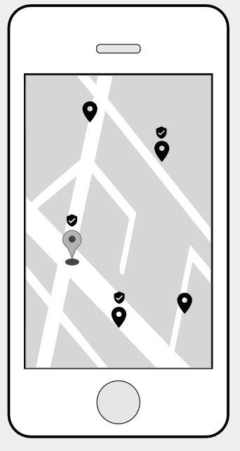
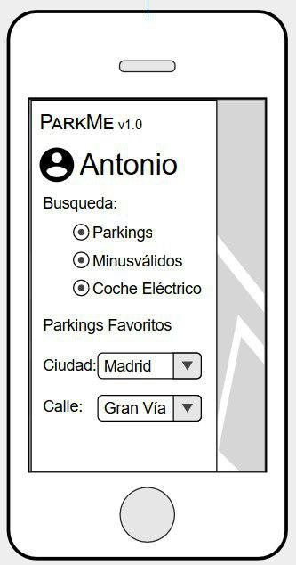

Al existir la necesidad en las Smart Cities de utilizar con mayor eficiencia sus recursos disponibles aplicando las tecnologías de la información se ha decidido diseñar una app que brinde el servicio de localización de plazas de parking dentro de una ciudad. Para el desarrollo de esta aplicación pensamos tener en cuenta la suposición de que las plazas de parking de la ciudad poseen un sensor para detectar si dicha plaza esta libre o no, para además de prestar un servicio de localización de plazas de parking se puedan distinguir entre aquellas ocupadas y libres.
Se pretende prestar mayor atención a la localización de las siguientes plazas de parking:
De esta forma, podríamos mostrar los sitios de parking en función de calles, distritos, ciudades, etc.
 